Permissions Lookup
The Permissions page enables ready review of the permissions on any Okera database or dataset. You can easily understand whether or not you have access to it, and find out what groups can give you access.
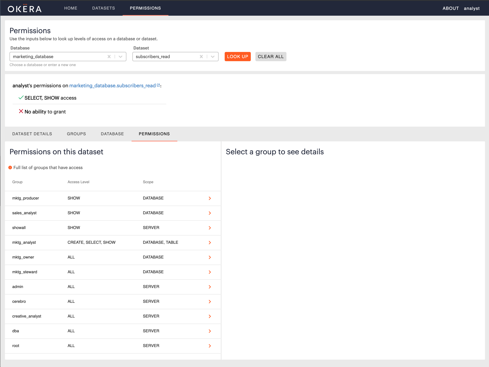
Use the database and dataset input boxes to look up any object. If you have access to the specified object, you will see this information:
Access Summary
Overview indicates whether you have access, what level of access, and if you can grant or not. To understand the privilege levels please see Privileges.
Dataset Details Tab
If you have access to the specified dataset, you will see the dataset details information here for easy access.
Groups Tab
If you have access, this tab shows the list of groups that are responsible for your access to the specified database or dataset.
Database Tab
Shows your access relative to the specified database.
If you only have access to specific datasets inside that database, it will show you a list of these.
Clicking on one of these datasets then shows the list of groups responsible for access to that specified database or dataset.
Permissions Tab
Shows the full list of groups that have any level of access to the specified database or dataset.
Any group not in the available list has no access to the specified database or dataset.
Attribute Expressions
In any detail section for groups providing access, if some attributes are granting access per Attribute Based Access Control, you will see those expressions listed alongside the role specified in the grant:

Tip: If you’re an Admin, you are able to look up any user’s or group’s access on an object, see Okera Portal for Admins.
Policy Builder
Only users who have admin privileges, users with ‘ALL’ access at the ‘CATALOG’ scope, or users with grant privileges on at least one database/dataset will be able to create access policies. Additionally, users may only create access policies on databases and datasets that they have grant privileges on.
Access Policies
An access policy grants specific permissions on specific data to a role. For example, an administrator may grant read-only permissions on a marketing database to a marketing analyst role.
You can specify the type of data that a role should or should not have access to by limiting an access policy to certain tags. For example, an administrator may grant an analyst role access to everything in a database except for data tagged as ‘sensitive’.
The Policy Builder lets you create access policies on any data that you have grant permissions on via a simple, natural language form.
Creating an Access Policy with the Policy Builder
To create an access policy, navigate to the Permissions page and click ‘Create New Access Policy’ at the top of the page:
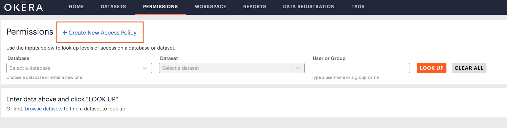
The Policy Builder will appear:
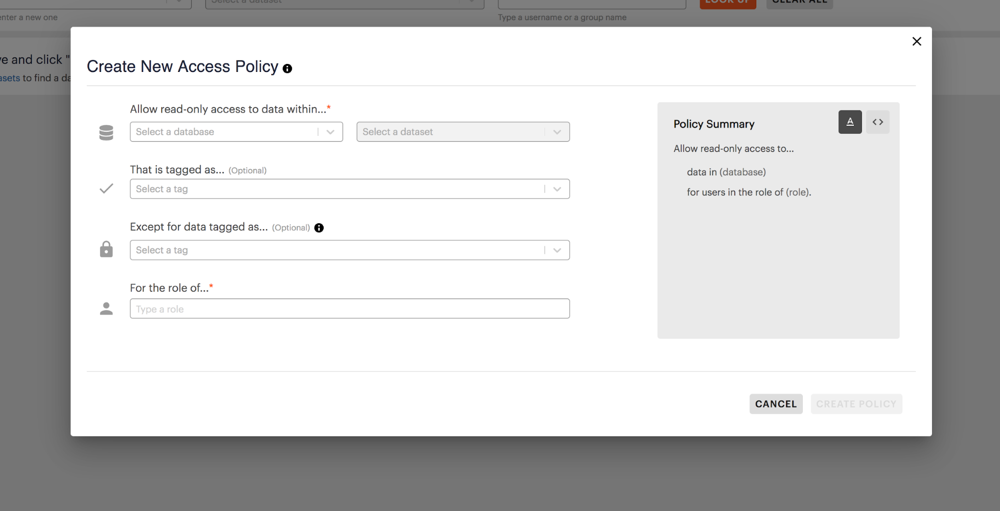
Selecting Data
Start by selecting the database or dataset that you want to allow access to. The dataset dropdown will remain disabled until you select a database.
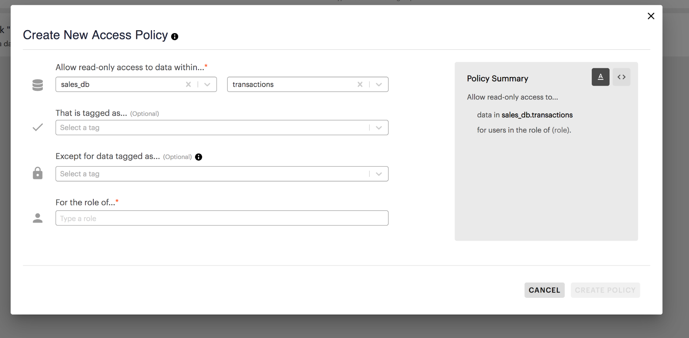
Limiting Access with Tags
Both tag fields are optional but may be used to further clarify what type of data the role should have access to.
If you only want to allow access to a specific type of data, select the relevant tags from the ‘That is tagged as…’ dropdown:
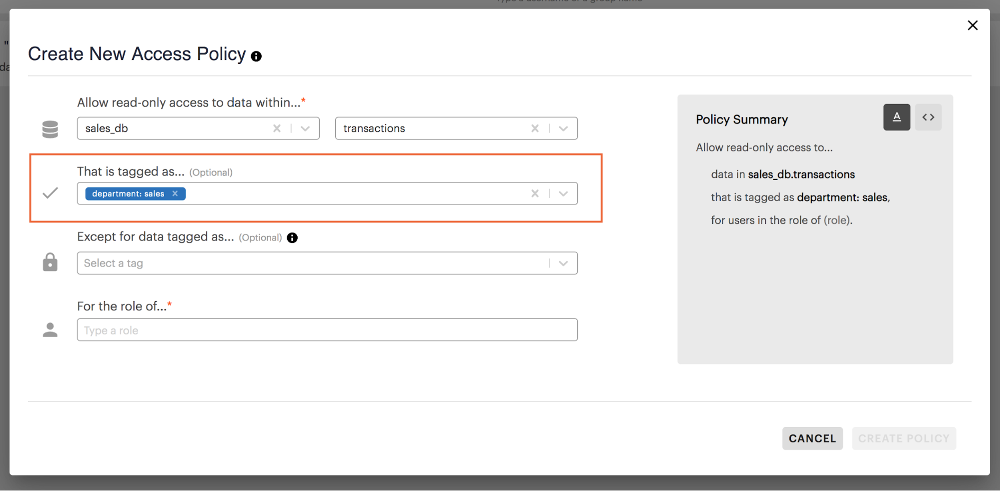
Selecting a tag from this dropdown will only allow the role access to columns in your selected database or dataset that have this tag. In the example above, a role would only have access to columns tagged as ‘department: sales’ within the transactions dataset.
If you want to prevent the role from accessing a specific type of data, select the relevant tags from the ‘Except for data tagged as…’ dropdown:
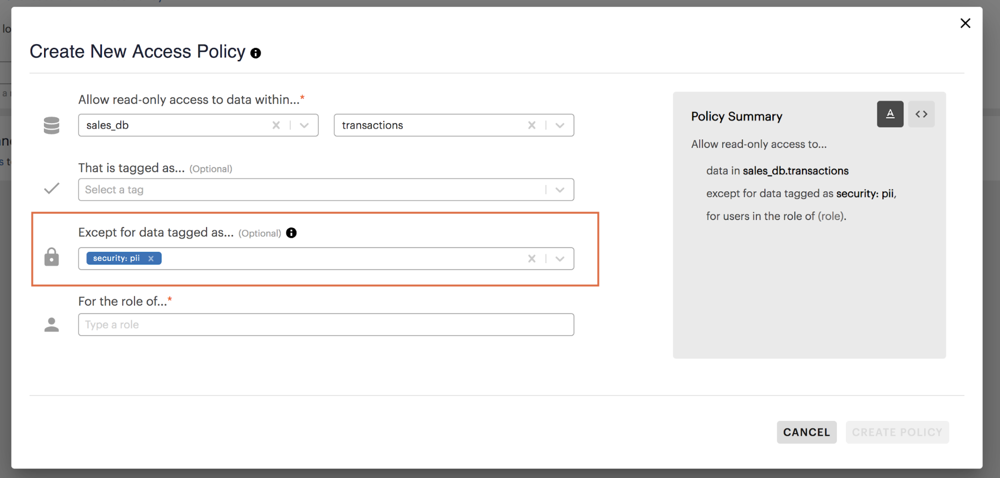
Selecting a tag from this dropdown will not allow the role to access any columns in your selected database or dataset that have this tag. In the example above, a role would have access to everything except columns tagged as ‘security: pii’ in the transactions dataset.
If you select multiple tags from this dropdown from either of the tag dropdowns, you must specify whether access is limited to any of these tags (an ‘OR’ statement) or all of these tags (an ‘AND’ statement):
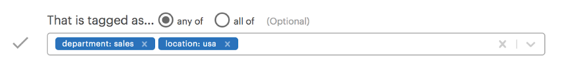
See Managing Tags for more information on creating tags and assigning them to columns.
Selecting a Role
Now that you have specified the data to be accessed, you must specify which role should have access. To do this, type a role into the role input field:
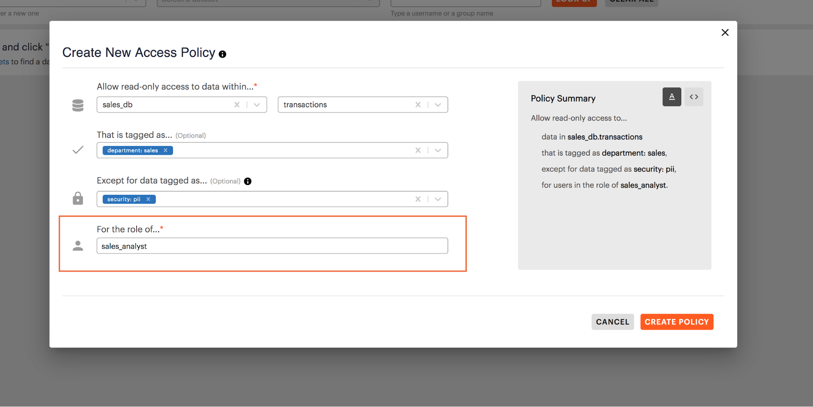
Policy Summary
As you provide information, the Policy Summary to the right of the workspace will dynamically update to show you a preview of the current policy.
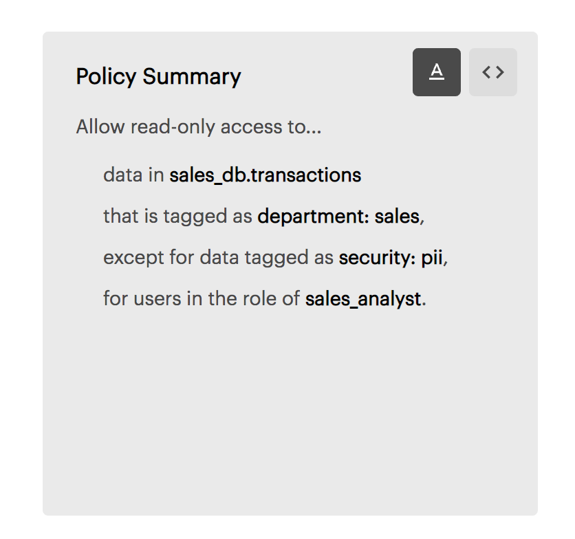
The Policy Summary defaults to a natural language format, but you may also use the toggle buttons in the top right corner of the summary to view your policy as a SQL statement.
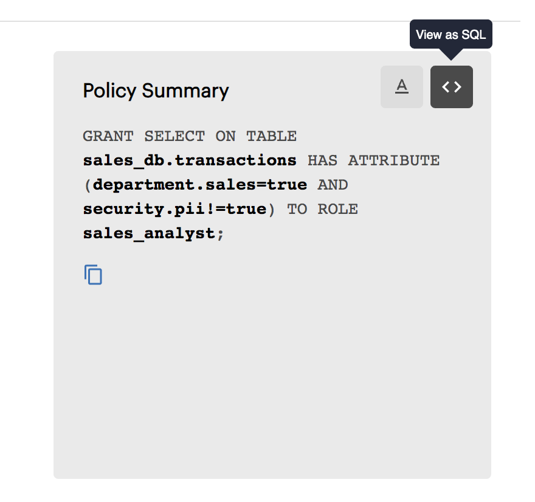
Creating a Policy
Once you have completed all the required fields, click ‘Create Policy’ to create your policy. If your policy was successfully created, you will see a success message.
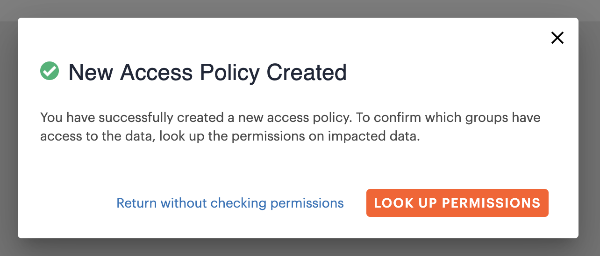
To verify that your policy has allowed the right role access to the right data, click ‘Look Up Permissions’. You will be returned to the Permissions page, which will display the permissions on your selected database or dataset. Find the permissions for your selected role on this page to verify the effects of your policy.
Conflicting Policies
If the policy you are attempting to create shares the same data, role, and at least one tag with an existing access policy, you will see a “Conflicting Policy” error.
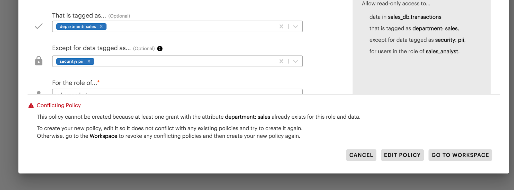
If you want to make changes to your new policy so that it does not conflict with the existing one, select ‘Edit Policy’ and change the role, data, or tags of your new policy.
If you want to replace the existing policy with your new one, you first must revoke the existing policy. To do this, click ‘Go to Workspace’. You will be redirected to the Workspace to revoke all existing policies that have the same role, data, and tag. You may then return to the Permissions page and try to create your new policy again.